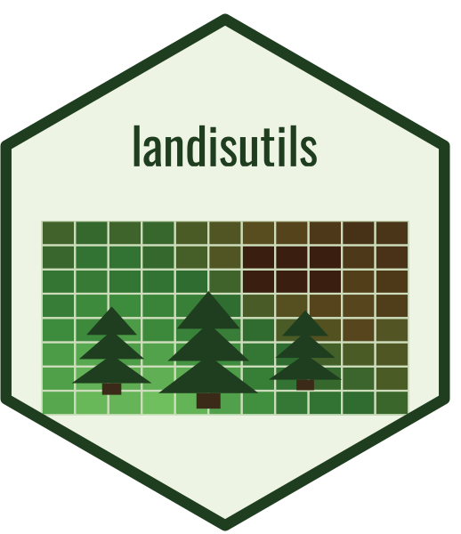

PnET-Succession Extension
PnETSuccession.RdBuilds the LANDIS-II PnET-Succession v6.0 extension input file
(compatible with LANDIS-II v8). The top-level PnET-Succession parameters
are written via this class' $write() method; auxiliary inputs (PnET
generic / species / ecoregion parameters, disturbance reductions,
Saxton-and-Rawls soil parameters, climate, and PnET output sites) are
written by the companion prep*() helpers.
References
LANDIS-II PnET-Succession v6.0 Extension User Guide https://github.com/LANDIS-II-Foundation/Extension-PnET-Succession/blob/master/deploy/docs/LANDIS-II%20PnET-Succession%20v6.0%20User%20Guide%20Jan21%202026.pdf
See also
Helpers that prepare inputs for this extension:
prepPnETGenericParameters(),
prepPnETSpeciesParameters(),
prepPnETEcoregionParameters(),
prepPnETDisturbanceReductions(),
prepPnETClimateFile(),
prepPNEToutputsites().
Shared scenario inputs:
prepClimateConfig(),
prepInitialCommunities().
Other PnET Succession helpers:
defaultPnETDisturbanceReductions(),
prepPNEToutputsites(),
prepPnETClimateFile(),
prepPnETDisturbanceReductions(),
prepPnETEcoregionParameters(),
prepPnETGenericParameters(),
prepPnETSpeciesParameters()
Super class
LandisExtension -> PnETSuccession
Active bindings
StartYearInteger. Climate year in which the simulation begins.
SeedingAlgorithmCharacter. Dispersal algorithm to use. One of
"WardSeedDispersal","NoDispersal","UniversalDispersal".LatitudeNumeric (optional). Degrees.
PNEToutputsitesCharacter (optional). Relative file path.
InitialCommunitiesCharacter. Relative file path.
InitialCommunitiesMapCharacter. Relative file path.
LitterMapCharacter (optional). Relative file path.
WoodyDebrisMapCharacter (optional). Relative file path.
PnETGenericParametersCharacter (optional). Relative file path.
PnETSpeciesParametersCharacter. Relative file path.
EcoregionParametersCharacter. Relative file path.
DisturbanceReductionsCharacter (optional). Relative file path.
ClimateConfigFileCharacter (optional). Relative file path.
SaxtonAndRawlsParametersCharacter (optional). Relative file path.
CohortBinSizeInteger (optional). Must be
>= Timestep.
Methods
Inherited methods
PnETSuccession$new()
Usage
PnETSuccession$new(
path = NULL,
Timestep = 10L,
StartYear = NULL,
SeedingAlgorithm = NULL,
Latitude = NULL,
PNEToutputsites = NULL,
InitialCommunities = NULL,
InitialCommunitiesMap = NULL,
LitterMap = NULL,
WoodyDebrisMap = NULL,
PnETGenericParameters = NULL,
PnETSpeciesParameters = NULL,
EcoregionParameters = NULL,
DisturbanceReductions = NULL,
ClimateConfigFile = NULL,
SaxtonAndRawlsParameters = NULL,
CohortBinSize = NULL
)Arguments
pathCharacter. Directory path.
TimestepInteger. Succession timestep in years (recommended <= 10).
StartYearInteger. Climate year in which the simulation begins.
SeedingAlgorithmCharacter. Dispersal algorithm to use. One of
"WardSeedDispersal","NoDispersal","UniversalDispersal".Latitude(Optional) Numeric. Global study-site latitude in degrees. Can alternatively be set per-ecoregion in the
EcoregionParametersfile.PNEToutputsites(Optional) Character. Relative file path to the
PNEToutputsitesinput file (see §12 of the user guide).InitialCommunitiesCharacter. Relative file path to the initial communities CSV (see §4 of the user guide).
InitialCommunitiesMapCharacter. Relative file path to the initial communities raster.
LitterMap(Optional) Character. Relative file path to the initial leaf litter map ($g/m^2$).
WoodyDebrisMap(Optional) Character. Relative file path to the initial dead woody debris map ($g/m^2$).
PnETGenericParameters(Optional) Character. Relative file path to the PnET generic parameters file (§7).
PnETSpeciesParametersCharacter. Relative file path to the PnET species parameters file (§8).
EcoregionParametersCharacter. Relative file path to the PnET ecoregion parameters file (§9).
DisturbanceReductions(Optional) Character. Relative file path to the disturbance reductions file (§10).
ClimateConfigFile(Optional) Character. Relative file path to the LANDIS-II climate library configuration file. When omitted, the climate file(s) referenced from
EcoregionParametersare used.SaxtonAndRawlsParameters(Optional) Character. Relative file path to an override Saxton-and-Rawls soil parameter file.
CohortBinSize(Optional) Integer. Number of years represented by an age cohort; must be
>= Timestep.